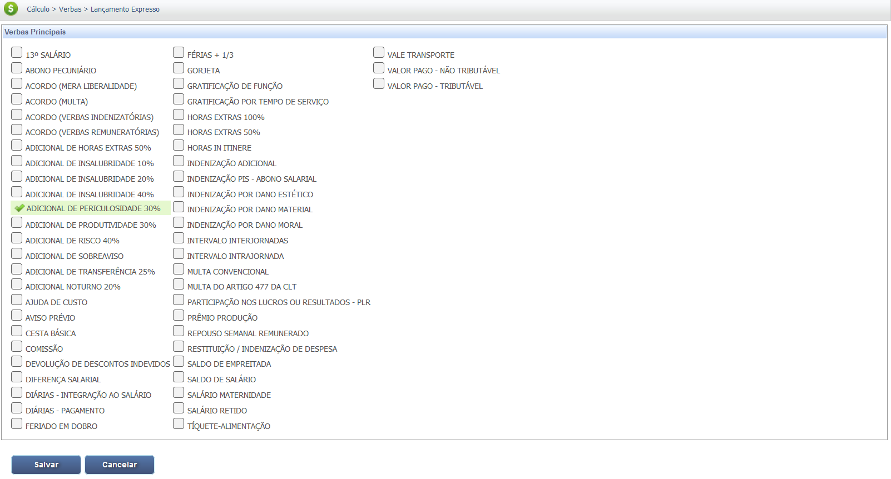
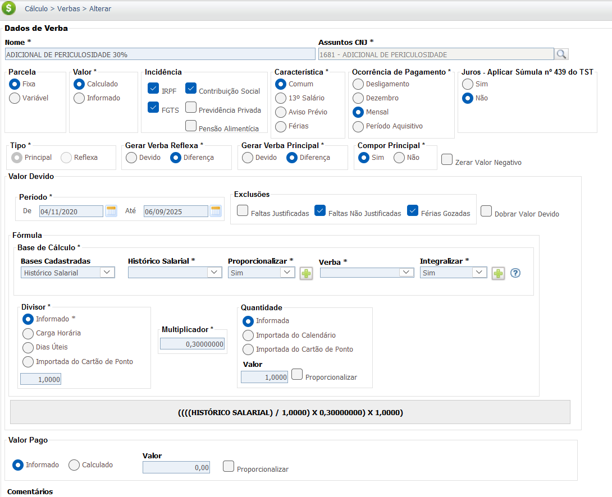
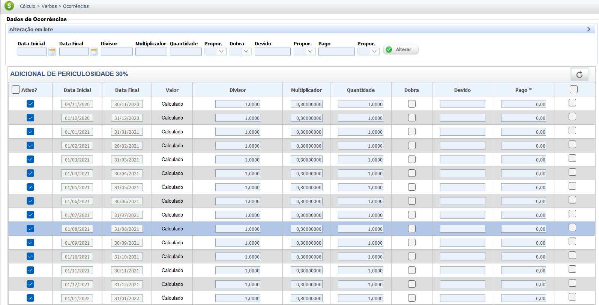

Adicional de Periculosidade
O adicional de periculosidade é uma compensação financeira para o empregado que atua em contato permanente com atividades ou operações que apresentem risco acentuado à sua vida ou integridade física. Esse adicional está previsto no Artigo 193 da Consolidação das Leis do Trabalho (CLT) e detalhado na Norma Regulamentadora 16 (NR-16) do Ministério do Trabalho.
O cálculo do adicional de periculosidade é um percentual fixo de 30% aplicado sobre o salário-base do empregado, sem a inclusão de gratificações, prêmios ou outros adicionais. Diferentemente de outros adicionais, não existe variação de grau (mínimo, médio ou máximo), sendo sempre de 30%.
É importante não confundir periculosidade com insalubridade. A periculosidade (NR-16) está relacionada a riscos imediatos de acidentes, como explosões, incêndios, roubos ou choques elétricos. Já a insalubridade (NR-15) refere-se a condições de trabalho que podem causar danos à saúde a médio ou longo prazo, como exposição a ruído excessivo ou agentes químicos. A lei determina que o trabalhador não pode receber os dois adicionais simultaneamente, devendo optar pelo mais vantajoso, caso se enquadre em ambas as situações.
Abaixo está uma tabela com as atividades e operações consideradas perigosas de acordo com a NR 16, baseada na busca anterior:
| Tipo de Risco | Atividades e Operações Perigosas |
|---|---|
| Inflamáveis | Produção, transporte, manuseio e armazenamento de líquidos ou gases inflamáveis. |
| Explosivos | Armazenamento, transporte, manuseio e operação de explosivos, incluindo detonações e destruição de materiais deteriorados. |
| Radiações Ionizantes ou Substâncias Radioativas | Atividades que envolvem a exposição a essas radiações em diversos ambientes. |
| Segurança Pessoal ou Patrimonial | Atividades de profissionais expostos a roubos ou outras formas de violência física, como seguranças ou vigilantes. |
| Energia Elétrica | Trabalhos em instalações ou equipamentos elétricos energizados em alta tensão. |
| Motocicleta | Atividades que exigem o uso de motocicleta ou motoneta para o deslocamento em vias públicas. |
| Agentes de Trânsito | Atividades de fiscalização, abordagem e controle de tráfego que expõem o profissional a riscos de colisões, atropelamentos e violência. |
Base Legal e Jurisprudência
O direito ao recebimento do Adicional de Periculosidade tem por base a legislação e os entendimentos a seguir:
Fontes Normativas
Consolidação das Leis do Trabalho (CLT) - Art. 193:
- Direito ao Adicional:
Estabelece o direito ao adicional de periculosidade para empregados expostos a condições de risco acentuado à vida ou integridade física.
- Percentual Fixo:
Define o percentual fixo de 30% sobre o salário-base.
Norma Regulamentadora nº 16 (NR 16):
- Regulamentação:
É a norma técnica que detalha e classifica as atividades e operações consideradas perigosas para fins de concessão do adicional.
Jurisprudência Consolidada
Súmula 364 do TST
Tese (Exposição Intermitente):
Considera devido o adicional quando a exposição ao risco, ainda que não seja permanente, seja habitual e cause risco de dano grave, como no caso de eletricitários que, de forma intermitente, ingressam na área de risco.
Súmula 132 do TST
Tese (Base de Cálculo):
O adicional de periculosidade integra a remuneração para todos os efeitos, mas é calculado apenas sobre o salário-base, sem a inclusão de gratificações, prêmios ou participações nos lucros da empresa.
OJ 324 da SDI-1 do TST
Tese (Energia Elétrica):
O adicional de periculosidade é devido a empregados que trabalham em contato com sistema elétrico de potência, mesmo que em unidade consumidora, e que realizam atividades ou operações no sistema elétrico predial.
Base de Cálculo e Deduções
A base de cálculo do adicional de periculosidade é o salário base do empregado, excluindo gratificações, prêmios ou participações nos lucros da empresa. Este conceito é fundamental, pois o cálculo não incide sobre o valor total da remuneração, mas apenas sobre a parcela fixa do salário.
O salário base refere-se ao valor fixo mensal acordado no contrato de trabalho, sem qualquer acréscimo de outras verbas. Ou seja, não são incluídas parcelas como horas extras, comissões, adicionais noturnos ou de insalubridade, dentre outras.
Exemplo de Cálculo do Adicional: Se um trabalhador tem um salário base de R$ 3.000,00, o cálculo do adicional de periculosidade será:
R$ 3.000,00 (Salário Base) x 30% = R$ 900,00
Valor do Adicional de Periculosidade: R$ 900,00
Deduções da Base de Cálculo
Sobre o valor do adicional de periculosidade incidem as deduções legais, como a contribuição para o INSS (Instituto Nacional do Seguro Social) e o Imposto de Renda (IRPF). Essas deduções são aplicadas de acordo com as tabelas progressivas vigentes, sendo calculadas sobre o valor total da remuneração, que inclui o salário base e o adicional.
Exemplo de Base de Cálculo para Deduções: Considerando o salário base de R$ 3.000,00 e o adicional de R$ 900,00:
- Remuneração total: R$ 3.000,00 + R$ 900,00 = R$ 3.900,00
- As alíquotas de INSS e IRPF incidirão sobre a remuneração total de R$ 3.900,00, e não apenas sobre o adicional de periculosidade.
Verbas Reflexas
O Adicional de Periculosidade, por possuir **natureza salarial** (Art. 193 da CLT e Súmula 132 do TST), integra a remuneração para todos os efeitos legais, gerando reflexos nas verbas abaixo. O adicional deverá ser pago integralmente se o contato com o agente perigoso for habitual ou intermitente, nos termos da Súmula 364 do TST.
O cálculo dos reflexos é feito pela integração do adicional ao salário-base, resultando na **remuneração completa** que serve como base de cálculo das verbas. (Ex: Salário-Base + 30% de Periculosidade).
| Verba Trabalhista | Reflexo do Adicional de Periculosidade |
|---|---|
| 13º Salário | Integra a base de cálculo do 13º Salário (integral e proporcional), computando-se o adicional pago em cada mês do ano. |
| Férias + 1/3 | Integra a base de cálculo das Férias (vencidas e proporcionais) e o adicional constitucional de 1/3. |
| Aviso Prévio | Integra a base de remuneração para cálculo do Aviso Prévio (trabalhado ou indenizado). |
| FGTS (Depósito Mensal e Multa) | Incide sobre o valor do adicional, compondo a base de cálculo para o depósito mensal de 8% e para a Multa de 40% (Súmula 63 do TST). |
| Horas Extras | Integra o salário-hora para fins de cálculo de Horas Extras e Adicional Noturno, aumentando o valor da hora normal (Súmula 264 do TST). |
Importante: O Adicional de Periculosidade não é devido durante afastamentos por acidente de trabalho ou doença ocupacional, se houver suspensão do contrato de trabalho (diferente do Adicional de Insalubridade, que pode ser devido em alguns casos de afastamento).
Calculadora (Simulação)
Utilize esta ferramenta para calcular o valor do seu adicional de periculosidade.
Cálculo Simples
Informe o salário base. O adicional é de 30%.
Lançamento no PJe-Calc
A seguir, confira o passo a passo para o lançamento da verba no PJe-Calc, utilizando a opção "Expresso":
-
Acessar Verbas e Escolher Lançamento: No menu de
navegação à esquerda, clique na opção Verbas para iniciar o lançamento. Após o
comando,
será exibida a tela para escolha do Lançamento da Verba. Escolha a opção Expresso.

- Seleção da Verba: O sistema abrirá as opções de verbas, escolha a verba Adicional de Periculosidade 30% e clique no botão Salvar 
-
Quadro de Verbas e Ações: O sistema exibirá um quadro
com os campos:
- Ações - contendo as opções de configurações da verba selecionada (parâmetros,
ocorrências e
exclusão)

-
- Parâmetros da Verba

-
- Ocorrências da Verba

-
- Excluir

- Verba Principal - verba selecionada para lançamento.
- Verba Reflexa - em que ao clicar no botão Exibir serão listadas todas as verbas reflexas ligadas a Verba Principal.
- Parametrização da Verba: Ao clicar no botão Parâmetros da Verba serão exibidas todas as configurações necessárias para a parametrização da Verba Principal. 
- Registro de Ocorrências: Ao clicar no botão Ocorrências da Verba serão exibidas todas as configurações necessárias para registro das ocorrências da Verba Principal. 